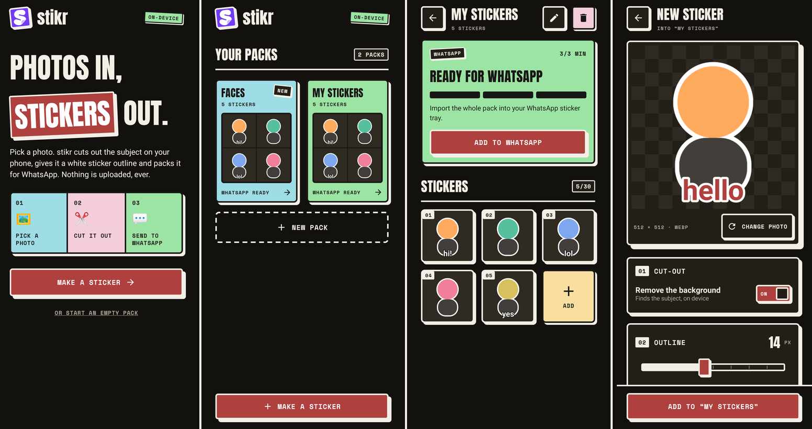

Photos in,
stickers out.
Anton headlines and system text for readable paragraphs. In the app, labels, buttons, and counters are uppercase Space Mono Bold; this site uses your system monospace.
Anton / SIL Open Font LicenseFlat pastel fills, heavy display type, and hard offset shadows. The palette below comes from PRODUCT.md.
#F1EDE7#191715#F8DFA0#9EDDE6#9CE4A4#F3CDDA#AE403E#723AF4The white peeled-corner “S” lives on purple. The app mark stands apart from the paper palette so it can stand alone on a home screen.
Anton headlines and system text for readable paragraphs. In the app, labels, buttons, and counters are uppercase Space Mono Bold; this site uses your system monospace.
Anton / SIL Open Font LicenseThe app draws 3 dp ink borders on every framed surface and hard offset shadows at 3, 5, and 8 dp, never blur. Buttons and cards sink into their shadows when pressed. This site uses 3 px borders and offset shadows the same way.
Purple, the app-mark colour, marks progress bars and keyboard focus. In dark mode the print inverts: near-black paper, cream ink, and cream shadows.
Pastel fills carry dark ink for contrast. The app follows the phone's theme; this site follows your browser's preferred colour scheme.
ui/theme/Theme.kt defines NeoPalette, exposed as Neo.palette, Material 3 colour mapping, and the type scale. Pastel fills always use dark onAccent ink. ui/theme/Tokens.kt holds the border, shadow, spacing, shape, and motion tokens.
ui/neo/ contains the shared components.
| Part | Components |
|---|---|
| Frame and containers | neoFrame for border and pressable hard shadow, NeoCard, NeoDialog, NeoEmptyState |
| Actions and input | NeoButton, NeoOutlinedButton, NeoIconButton, NeoSegmented, NeoSwitch, NeoSlider, NeoSwatch, NeoTextField |
| Labels and feedback | NeoTag, NeoSectionHeader, NeoSnackbar, NeoProgressBar, NeoMeter |
| Display | StickerHeadline, NeoWordmark |
The home slogan knocks STICKERS out of a tilted red slab with a hard shadow.

